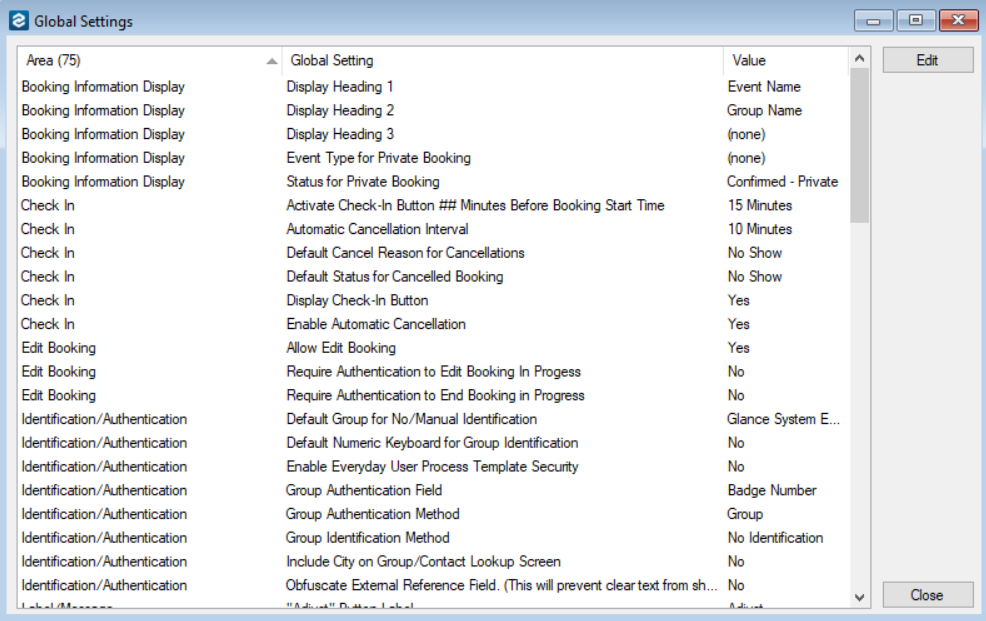

Configure EMS Room Sign App
This topic provides information on configuring the following in (formerly named Glance):
Access EMS Room Sign App (formerly named Glance) Settings
When configuring devices (such as tablets) to use the EMS Room Sign App, please consider these Best Practices.
- On the toolbar, click EMS Glance Settings.
- The EMS (Glance) Room Sign App main window opens. The window displays three configuration options: Global Settings, Profiles, and Refresh All Units.

EMS (Glance) Room Sign App Main Window
- Global Settings—Contains all of the EMS Room Sign App global settings, which determine the behavior for a particular EMS Room Sign App unit or group of EMS Room Sign App units. Profile settings can overwrite Global Settings.
- Profiles—Controls the functionality of your EMS Room Sign App units. Depending on how you would like to manage your EMS Room Sign App devices, a single profile can be configured to manage a single meeting room or multiple meeting rooms. See Also: Configure Profiles in the EMS Room Sign App.
A particular device is tied to one specific room in EMS. Profiles provide flexibility in how you choose to manage the configuration of your devices.
- Refresh All Units—Forces all units to refresh their settings. Use this setting after modifying a specific Profile or Global Settings to force all of your units to pick-up the setting change(s).
Global Settings
Global settings affect the booking detail information that is displayed for all the profiles in your EMS Room Sign App instance.
You can set how information displays at the Global level (defaults for all Profiles) or for just one profile.
You can override these settings on a per profile basis on the Settings tab of the Profile dialog box.

Global Settings Dialog Box
Primary EMS Room Sign App Screens
EMS Room Sign App consists of two primary screens: the Available screen and the In Progress screen. Both Global settings and Profile settings determine the booking information that is displayed on the various screens.

Available Screen (Example of a future meeting with setup and teardown)